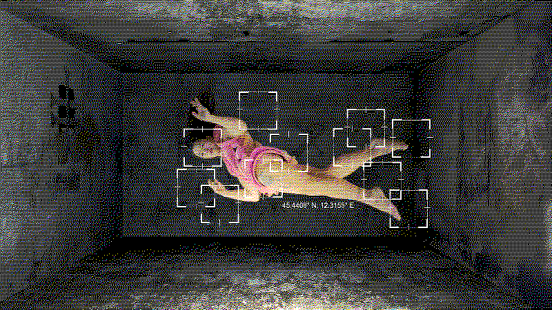

System 2: Civic Structures
Shu Lea Cheang, CASANOVA X (still), from 3x3x6. 4K video, 10 minutes.
Systems and the Built/Bureaucratic World
We are all compelled to engage with built and bureaucratic systems to move through the world. We are connected and reliant on vast networks of infrastructure for water, gas, electricity, internet, transportation, and more. We engage in a seemingly endless number of information systems to access healthcare, food, work, education, and on and on. Some of these systems feel invisible or benign while others seem actively hostile. Artists (perhaps more than most people) find themselves often at odds with systems and create work that challenges or explores the system they feel in opposition to.
Lets consider the systems in our lives.
Reflection on Lived System Experience
Take a few minutes to list out some of the systems you come into contact with in a given week. Write down what the system is, how you access it, whether you have a positive or negative feeling towards the system, and any other thoughts you might have. Try to come up with at least 5 systems.
Experience Mapping
Now choose 2 of the systems you listed and draw an overlapping map of the two systems. You can use any kind of symbols, notes, lines, etc to create your map. Think of how these systems overlap and how you might represent that on the page. An example might be a map of the sidewalks you walk on to get to school and work and a map of the cell towers your phone uses to connect to the internet. You do not need to have real data! You can produce an imagined system/network in place of real numbers.
Share
When finished, share your map with your group. Explain your choice of systems and who they do (or perhaps don't) connect.